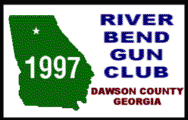
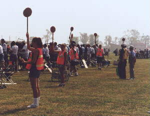
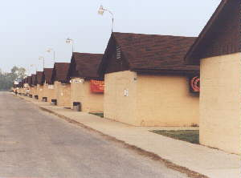

Camp Perry Frequently Asked Questions
| Courtesy of Justin Nystrom of the River Bend Gun Club in Dawson County Georgia, here are answers to the most common questions asked by those interested in attending the National Pistol Matches at Camp Perry. |  |
Before reading anything else, if you are REMOTELY interested in
attending the National Matches at Camp Perry, visit this Webpage to obtain entry information.
Why Attend the National
Matches at Camp Perry?
The reasons are many: Great camaraderie with your fellow shooter,
taking part in a grand tradition, visiting commercial row,
Meeting new and interesting people with like interests and values
to name just a few.
Where Exactly is Camp Perry?
Camp Perry, geographically
speaking is located on the shores of Sandusky Bay, Lake Erie -
near the town of Port Clinton, Ohio. Consult your Rand McNally
road atlas. (After all, you are a resourceful bullseye shooter!)
When Does the Pistol Phase
Take Place?

The Pistol phase is always in the second full week of July. The first two days of Camp Perry are the Small Arms Firing School. This is a quality pistol instruction course given by the US Army Marksmanship Unit of Ft. Benning, GA. It is not required that you attend this part but it is a good, informative class and includes some live fire training. Wednesday will be the preliminary matches. Thursday will be the .22 match, Friday the CF match and Saturday the .45 match. On Sunday are the National Trophy Pistol Matches - (LEG Matches).Where Do I Stay?
If you don't have hotel reservations already, you are staying on the grounds of Camp Perry. In this respect there are two options: Economy, i.e. the "hut" and Civilized, a module. There are plusses and minuses for each type of accomodation. Huts have slightly fewer creature comforts than a Turkish prison. But, they are only $10 a bunk. As a pistol shooter, you have the honor of being the first person to use the hut in 10 months. Therefore, bring your Pine-Sol, bug bomb, bucket and broom. I stayed in a hut during my first trip to Perry during the great heat wave of 1995. I was poorly prepared for such an experience. Be sure to bring a cooler, box fan, a radio, etc. A piece of carpet and a fridge are a nice touch. I was pared up with three great fellas from Indiana who brought a fridge and a seemingly endless supply of beer (only after shooting, of course!). This helped with the heat if not my scores. Last year's weather was beautiful and I'm sure staying in a hut was just fine. The modules are $22 per person and are air-conditioned and have bathrooms with showers. If you suffer from any heat-related physical ailment - request a module. Modules are not easy to get and are first-come first-served.
How Much Will I Spend?
More than you think possible.
What Is The Weather Like?
It ranges from Hell to Heaven. Expect torrential rain, blistering sun, unseasonably chilly weather, and above all WIND. Don't, whatever you do forget sun block or a rain suit. Also, bring some sort of plastic covering for your gunbox opening. All shooting is done out in the open (no cover).
What Are Some Things To Do There?
You will, no doubt, find things to entertain yourself. Here are a few highlights you may wish to take in:
- Bring your air pistol. There is a semi-indoor airgun
range available most of the time at Perry. Shoot in a 60
shot match.
- The lakefront is very nice. Go to Port Clinton. You may
wish to go on a charter fishing trip if you are so
inclined.
- There is a swap meet at Perry on one of the evenings.
Bring any bullseye stuff you want to sell.

Bring lots of mad money. Commercial Row is a collection of major vendors and gun manufacturers. Clark is always there, so is Champion's Choice among others. REMEMBER: your NRA points are like cash at Perry - don't leave home without them.
- See the NRA trophies, experience the history.
- Visit the Chapel on base. A very peaceful place for
reflection, if you are so inclined.
- Bring a bicycle if you have the room. If you are in any fitness at all, it is a great way to get around the flat landscape of the base while not shooting.